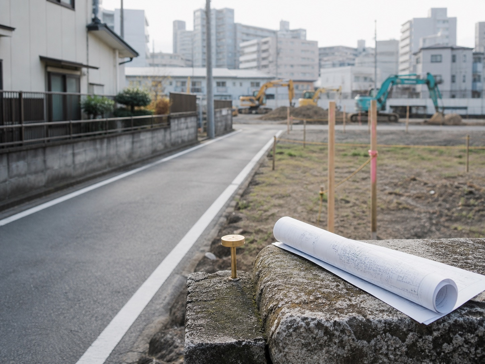

01
権利の売買
底地・借地権など、対象となる権利と取引条件を整理します。
底地・借地、共有地、境界や接道に課題がある土地は、価格だけでなく、契約内容と関係者の意向を丁寧に整理することが出発点です。借地契約、地代・更新、登記、公図、測量、境界、越境、道路、再建築の可否などを確認します。
地主・借地人・共有者・隣地所有者、それぞれの希望と条件を一つずつ調整します。複雑だからと諦めず、調査と対話を重ね、不動産の価値を生かす道筋をつくります。
図面上の境界だけでなく、契約の経緯や関係者の希望を丁寧に確認します。技術・法務・不動産実務を横断して進めます。

一つの資料だけでは判断せず、契約・図面・現地・関係者の意向を照らし合わせます。

現在の契約内容、地代、更新条件、これまでの経緯を確認します。
名義と図面を確認し、現況との差や追加調査の必要性を整理します。

隣地との関係や建物・工作物の状態を確認し、調整すべき点を見つけます。
接道や再建築の可否など、土地利用に影響する条件を確認します。

地主、借地人、共有者、隣地所有者の希望と優先条件を把握します。
権利を整えること自体を目的にせず、土地の価値を生かせる実行案へつなげます。
底地・借地権など、対象となる権利と取引条件を整理します。
関係者が同じ方向を選べる場合、一体での売却可能性を検討します。
将来の利用や管理に向け、契約条件を確認・調整します。
複数の土地や権利をまとめ、より良い利用方法を探ります。
案件ごとに必要な確認は異なります。状況を把握し、選択肢を比べてから実行へ進みます。
契約書、登記、公図、測量図など、確認できる資料を整理します。
土地の現況と、関係者それぞれの意向を把握します。
法務・測量・建築の視点を加え、実行可能性を確認します。
条件を一つずつ調整し、売買・契約・利用へつなぎます。
所有者の異なる9筆の土地を約1年半かけて取りまとめ、マンション用地としての活用につなげた事例があります。必要に応じて弁護士、司法書士、土地家屋調査士、建築士等と連携し、時間をかけて条件を整えます。
契約書や図面がそろっていない場合も、分かる範囲から調査の入口を整理します。